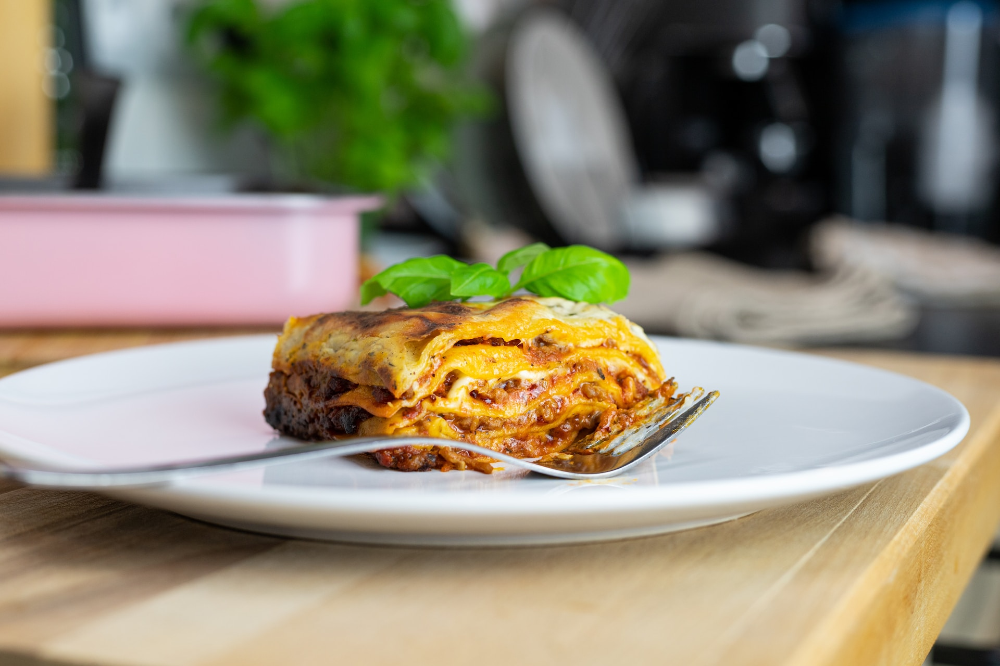

Lasagna

This classic Italian dish is made with layers of pasta, meat sauce, and cheese.
Ingredients:
- 1 pound ground beef
- 1 onion, chopped
- 2 cloves garlic, minced
- 1 can (28 ounces) crushed tomatoes
- 1 can (6 ounces) tomato paste
- 1/4 cup chopped fresh parsley
- 1 tsp dried basil
- 1 tsp salt
- 1/2 tsp black pepper
- 12 lasagna noodles
- 1 egg
- 1 container (15 ounces) ricotta cheese
- 2 cups shredded mozzarella cheese
- 1/4 cup grated Parmesan cheese
Instructions:
- Preheat oven to 375°F (190°C). Grease a 9x13 inch baking dish.
- In a large skillet, cook the ground beef, onion, and garlic over medium heat until browned. Drain off excess fat.
- Stir in the crushed tomatoes, tomato paste, parsley, basil, salt, and pepper. Simmer for 10 minutes, stirring occasionally.
- Meanwhile, cook the lasagna noodles according to package directions. Drain and rinse with cold water.
- In a medium bowl, beat the egg. Stir in the ricotta cheese, 1 cup of the mozzarella cheese, and the Parmesan cheese.
- To assemble, spread 1 cup of the meat sauce in the bottom of the prepared baking dish. Arrange 4 lasagna noodles on top. Spread one-third of the cheese mixture over the noodles. Repeat layers twice. Top with remaining meat sauce and mozzarella cheese.
- Cover with foil and bake for 25 minutes. Remove foil and bake for an additional 25 minutes, or until cheese is melted and bubbly.
- Let stand for 10 minutes before serving.